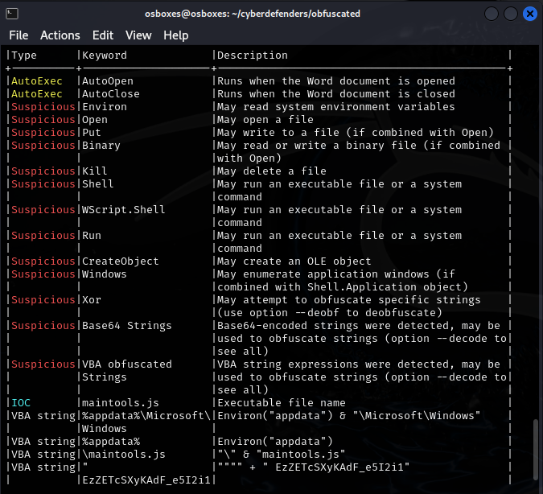
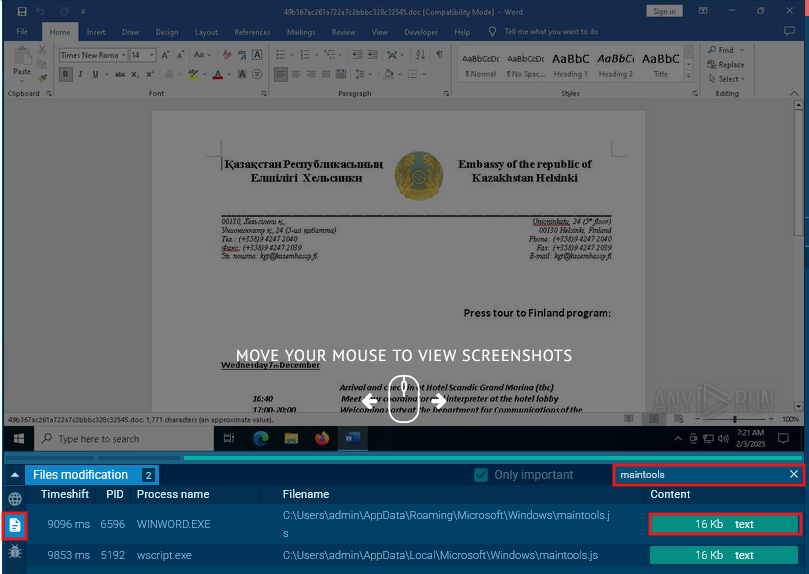
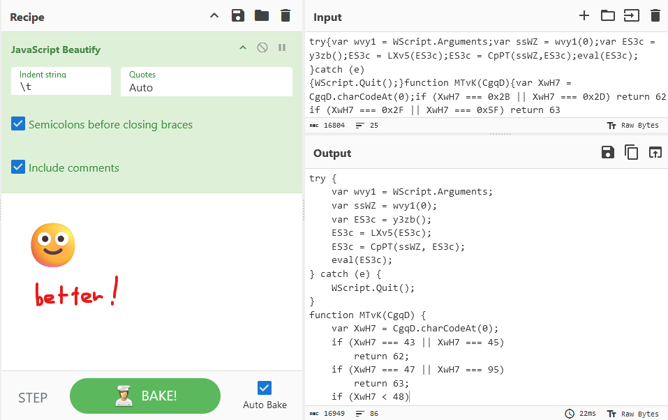

CyberDefenders Writeup: Obfuscated
The CyberDefenders platform is quite nice! Blue team labs with nice difficulty and community, fun challenges, and my favorite part: they'll let you know what tools you need to use for a lab! Really helpful without compromising the difficulty of the challenge. Only downside is that some questions are worded a bit weirdly imo. You'll see what I mean later.
⇢ [Medium] Obfuscated - Malware Analysis
Lab scenario: While working as a SOC analyst, you may encounter alerts from the enterprise Endpoint Detection and Response (EDR) system regarding unusual activity on an end-user machine. In one instance, a user reported receiving an email containing a DOC file from an unknown sender. The user subsequently submitted the document for analysis to ensure it does not pose a security risk.
So this is a malicious word document. I haven't done analysis on these before, but I do know that they contain VBA scripts as their 'payload'.
CyberDefenders recommended the following tools: CmdWatcher, Oledump, sha256sum, olevba, dd, VS Code, and CyberChef.
[Task 1] What is the SHA-256 hash of this malware binary?
Just use the sha256sum command on the binary to get the hash.
> sha256sum 49b367ac261a722a7c2bbbc328c32545 ff2c8cadaa0fd8da6138cce6fce37e001f53a5d9ceccd67945b15ae273f4d751 49b367ac261a722a7c2bbbc328c32545
By the way, the file's name is its md5 hash. When you look up the file on VirusTotal, you can see that the og name is its sha256 hash.
[Task 2] Multiple streams contain macros in this document. Provide the number of the lowest one.
By 'streams' here I'm pretty sure they meant byte streams or file streams (strings). You could strings the file and dig through the macros, but we could use one of the tools CD graciously gave to us: Oledump. Run this script to get streams from OLE files.
> python3 oledump.py 49b367ac261a722a7c2bbbc328c32545 1: 114 '\x01CompObj' 2: 284 '\x05DocumentSummaryInformation' 3: 392 '\x05SummaryInformation' 4: 8017 '1Table' 5: 4096 'Data' 6: 483 'Macros/PROJECT' 7: 65 'Macros/PROJECTwm' 8: M 7117 'Macros/VBA/Module1' 9: m 1104 'Macros/VBA/ThisDocument' 10: 3467 'Macros/VBA/_VBA_PROJECT' 11: 2964 'Macros/VBA/__SRP_0' 12: 195 'Macros/VBA/__SRP_1' 13: 2717 'Macros/VBA/__SRP_2' 14: 290 'Macros/VBA/__SRP_3' 15: 565 'Macros/VBA/dir' 16: 76 'ObjectPool/_1541577328/\x01CompObj' 17: O 20301 'ObjectPool/_1541577328/\x01Ole10Native' 18: 5000 'ObjectPool/_1541577328/\x03EPRINT' 19: 6 'ObjectPool/_1541577328/\x03ObjInfo' 20: 133755 'WordDocument'
The letter 'M' next to a stream means that it's a macro. I was a bit confused about what the question meant by the 'number of the lowest one'. But the author of the tool wrote about it a little in his blog. The leftmost number is the stream number. So the number of the lowest stream containing a macro would be 8.
[Task 3] What is the decryption key of the obfuscated code?
We have to use oletools for this. Specifically, olevba. There's a super helpful cheat sheet in the github repo that you can use. I used the --deobf flag because it seems like the key is obfuscated (you can see the obfuscated string with the --decode flag).
[Task 4] What is the name of the dropped file?
You can find maintools.js hanging out there in the output of the last command.
[Task 5] This script uses what language?
Ah yes, simple plebingtons will assume the .js extension would mean this script is written in javascript... what fools! Alas, if they had only looked closer at the output of the previous command, they would have seen references to WScript.Shell, which is associated with JScript, Microsoft's implementation of the ECMAScript standard that is NOT to be confused with javascript!
^ That is what it felt like to read the hints for this question.
[Task 6] What is the name of the variable that is assigned the command-line arguments?
OK, we're looking at the contents of maintools.js now. Er, how do we get this file? I couldn't find a way myself, so I read some writeups for this question. Some people said to actually run it! I didn't have a Windows VM to use, so I uploaded it to Any.run to collect the dropped files from there. This is the Any.run analysis link for the file I found online. Might not be an exact 1:1 from what the lab provides, but this is an alternative if you don't want to make an account lol.
Go to the dropped files tab on the web app and search for maintools.js. From there you can click the contents button to view the script or download it. But the script is really gross because there's no indentation and the formatting is ugly. To spare your sanity, I really recommend pasting it into CyberChef and using the JavaScript Beautify recipe on it.
Okay, back to the question. You can see quite clearly that wvy1 is assigned to the command line arguments.
[Task 7] How many command-line arguments does this script expect?
You can ctrl+f in cyberchef to look for all mentions of wvy1. There's only 2 matches:
try { var wvy1 = WScript.Arguments; var ssWZ = wvy1(0);
Only the first element of wvy1 is used, so there would only be 1 command line argument.
[Task 8] What instruction is executed if this script encounters an error?
You can just look at the entire try-catch section.
try { var wvy1 = WScript.Arguments; var ssWZ = wvy1(0); var ES3c = y3zb(); ES3c = LXv5(ES3c); ES3c = CpPT(ssWZ, ES3c); eval(ES3c); } catch (e) { WScript.Quit(); }
[Task 9] What function returns the next stage of code (i.e. the first round of obfuscated code)?
Ok, we have to look through the other functions now. Pretty much every var/func here has a gibberish 4 character name so it'll be harder for us to read. Luckily, we can still read scripts!
First there's MtvK which accepts CgqD as an argument. It's used to check for the first byte in CgqD. Possibly used to check the file magic number to see if it's a specific type of file. Commonly used in ransomware.
function MTvK(CgqD) { var XwH7 = CgqD.charCodeAt(0); if (XwH7 === 43 || XwH7 === 45) return 62; if (XwH7 === 47 || XwH7 === 95) return 63; if (XwH7 < 48) return -1; if (XwH7 < 48 + 10) return XwH7 - 48 + 26 + 26; if (XwH7 < 65 + 26) return XwH7 - 65; if (XwH7 < 97 + 26) return XwH7 - 97 + 26; }
But we're looking for obfuscated code, so this isn't it. The following functions, LXv5() and CpPT() seem to have something to do with encryption? But just scroll down some more to y3zb():
function y3zb() { var qGxZ = 'zAubgpaJRj0tIneNNZL0wjPqnSRiIygEC/sEWEDJU8LoihPXjdbeiMqcs6AavcLCPXuFM9LJ7svWGgIJKnOOKpe5/T820lsv+DwY... (output cut)
That's definitely obfuscated code.
[Task 10] The function LXv5 is important, what variable is assigned a key string value in determining what this function does?
LXv5 is the encryption function mentioned earlier. The first few lines of the function look like this:
function LXv5(d27x) { var LUK7 = 'ABCDEFGHIJKLMNOPQRSTUVWXYZabcdefghijklmnopqrstuvwxyz0123456789+/'; ...
We see this LUK7 variable holds a string containing characters from A-Z, a-z, 0-9, +/. Isn't this familiar?
[Task 11] What encoding scheme is this function responsible for decoding?
Base 64. It's always base 64..
[Task 12] In the function CpPT, the first two for() loops are responsible for what important part of this function?
I had to read the hints for this! First of all, here's the complete function including the loops to look at:
function CpPT(bOe3, F5vZ) { var AWy7 = []; var V2Vl = 0; var qyCq; var mjqo = ''; for (var i = 0; i < 256; i++) { AWy7[i] = i; } for (var i = 0; i < 256; i++) { V2Vl = (V2Vl + AWy7[i] + bOe3.charCodeAt(i % bOe3.length)) % 256; qyCq = AWy7[i]; AWy7[i] = AWy7[V2Vl]; AWy7[V2Vl] = qyCq; } var i = 0; var V2Vl = 0; for (var y = 0; y < F5vZ.length; y++) { i = (i + 1) % 256; V2Vl = (V2Vl + AWy7[i]) % 256; qyCq = AWy7[i]; AWy7[i] = AWy7[V2Vl]; AWy7[V2Vl] = qyCq; mjqo += String.fromCharCode(F5vZ[y] ^ AWy7[(AWy7[i] + AWy7[V2Vl]) % 256]); } return mjqo; }
In the first for loop, we're just filling AWy7 with numbers from 0 to 255. The second loop is also looping for 256 times. There's a funky algorithm here where we're grabbing a specific character from the b0e3 parameter, adding it with a number from AWy7, then doing a mod function with 256 again. Then in the same loop, we're swapping the values at AWy7[i] and AWy7[V2V1] with each other. But this doesn't seem to be the encryption function itself? It's more like we're setting up a bunch of variables for encryption. Plus, it's way more likely that the encryption function would be the obfuscated section.
The hints provided explained that the two loops were used to set up the S-box, which is used for the key scheduling algorithm.